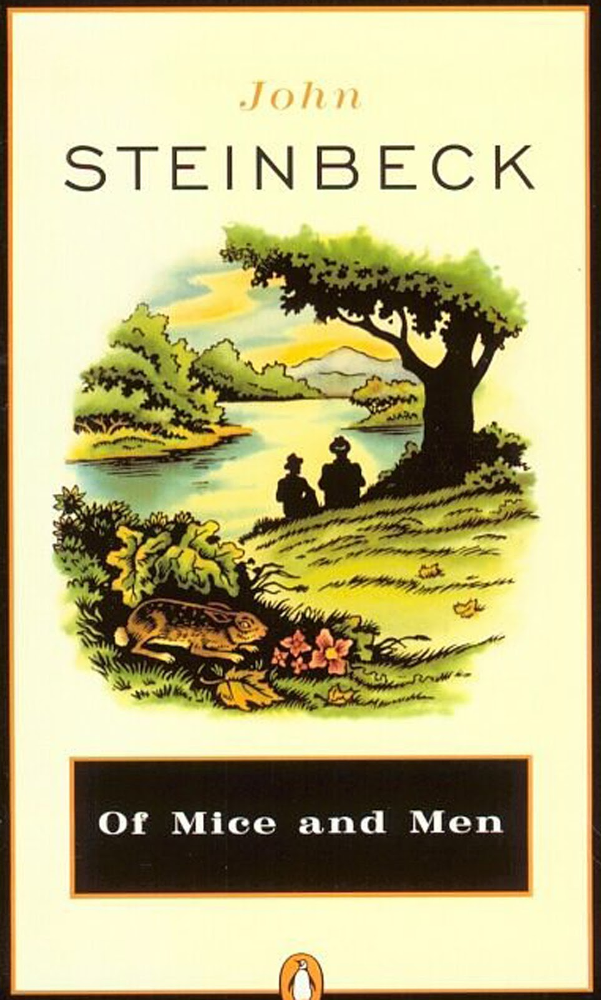

Of Mice and Men
Author: John Steinbeck
ISBN-10: 0140177396
ISBN-13: 978-0140177398
Price: $7.00
Description
They are an unlikely pair: George is "small and quick and dark of face"; Lennie, a man of tremendous size, has the mind of a young child. Yet they have formed a "family," clinging together in the face of loneliness and alienation.
They are an unlikely pair: George is "small and quick and dark of face"; Lennie, a man of tremendous size, has the mind of a young child. Yet they have formed a "family," clinging together in the face of loneliness and alienation.
"A thriller, a gripping tale . . . that you will not set down until it is finished. Steinbeck has touched the quick." -The New York Times
About the Author
John Ernst Steinbeck, Jr. (February 27, 1902 - December 20, 1968) was an American author of twenty-seven books, including sixteen novels, six non-fiction books, and five collections of short stories. He is widely known for the comic novels Tortilla Flat (1935) and Cannery Row (1945), the multi-generation epic East of Eden (1952), and the novellas Of Mice and Men (1937) and The Red Pony (1937). The Pulitzer Prize-winning The Grapes of Wrath (1939), widely attributed to be part of the American literary canon, is considered Steinbeck's masterpiece. In the first 75 years since it was published, it sold 14 million copies.
The winner of the 1962 Nobel Prize in Literature, he has been called "a giant of American letters". His works are widely read abroad and many of his works are considered classics of Western literature.
Most of Steinbeck's work is set in southern and central California, particularly in the Salinas Valley and the California Coast Ranges region. His works frequently explored the themes of fate and injustice, especially as applied to downtrodden or everyman protagonists.